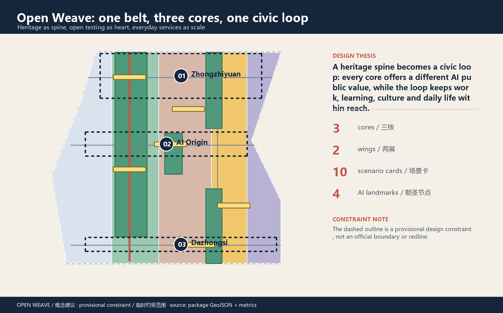
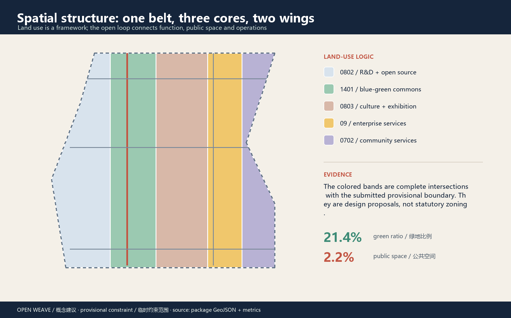
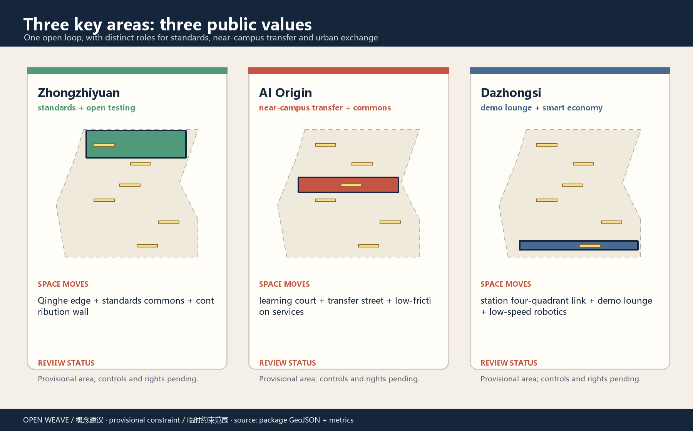
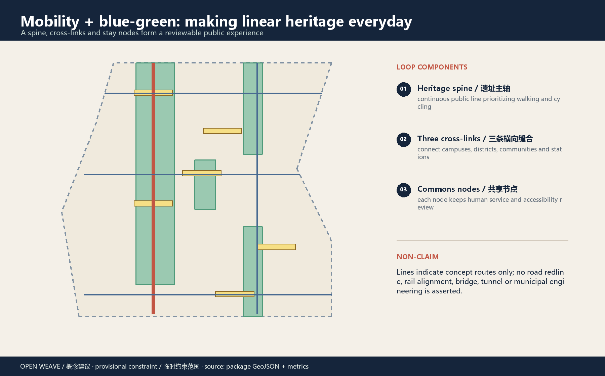
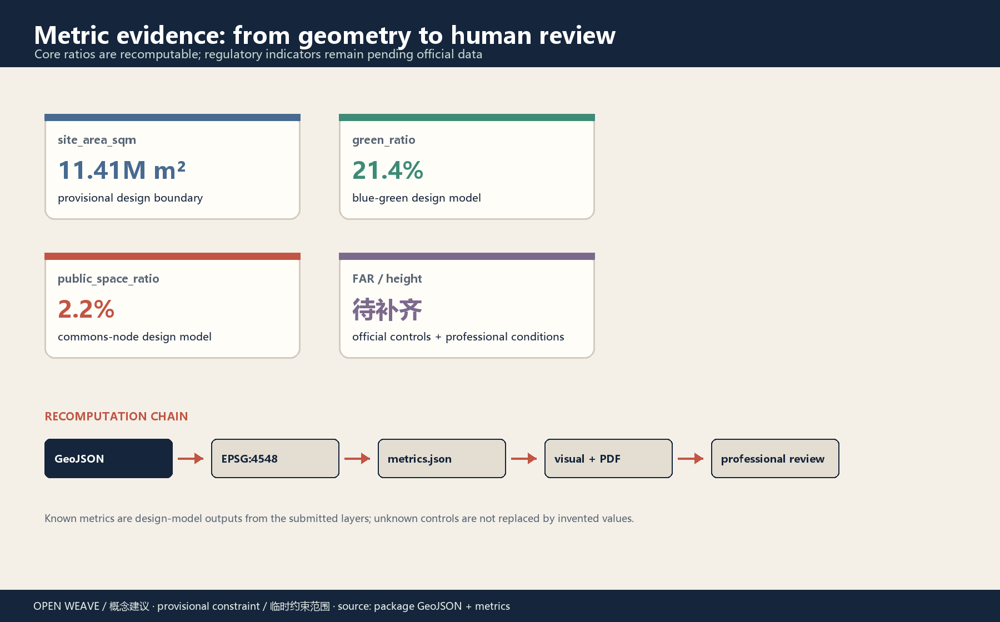
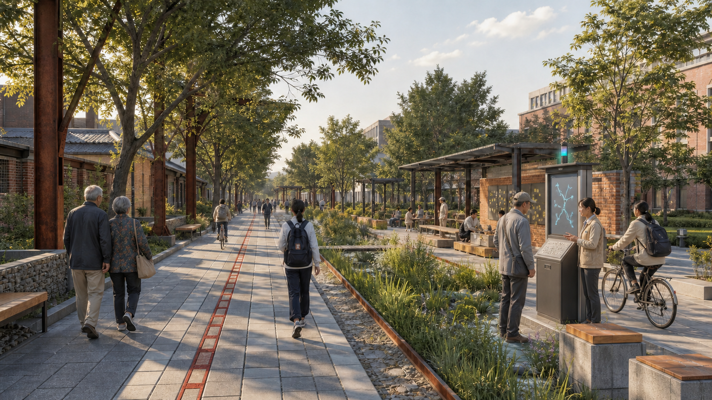
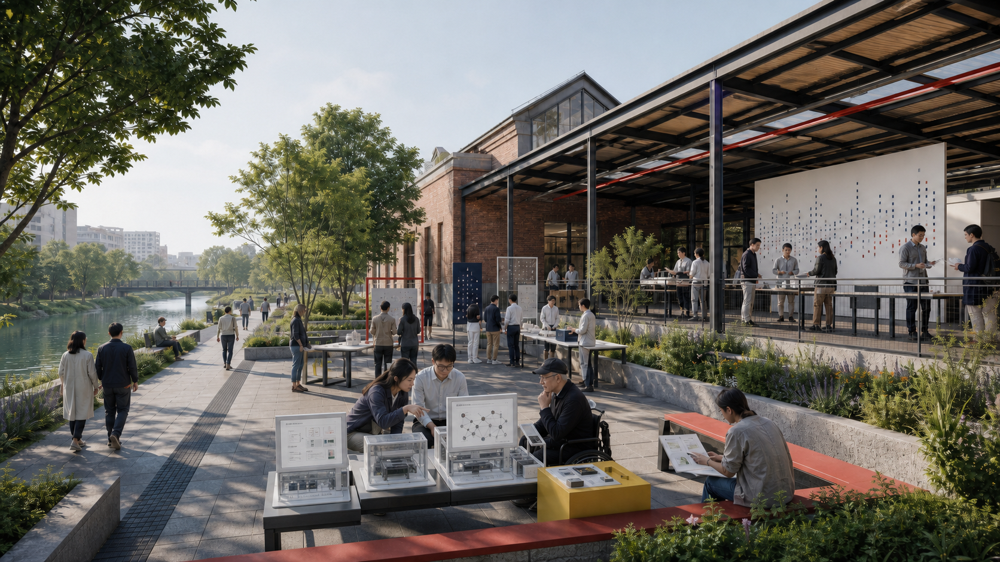
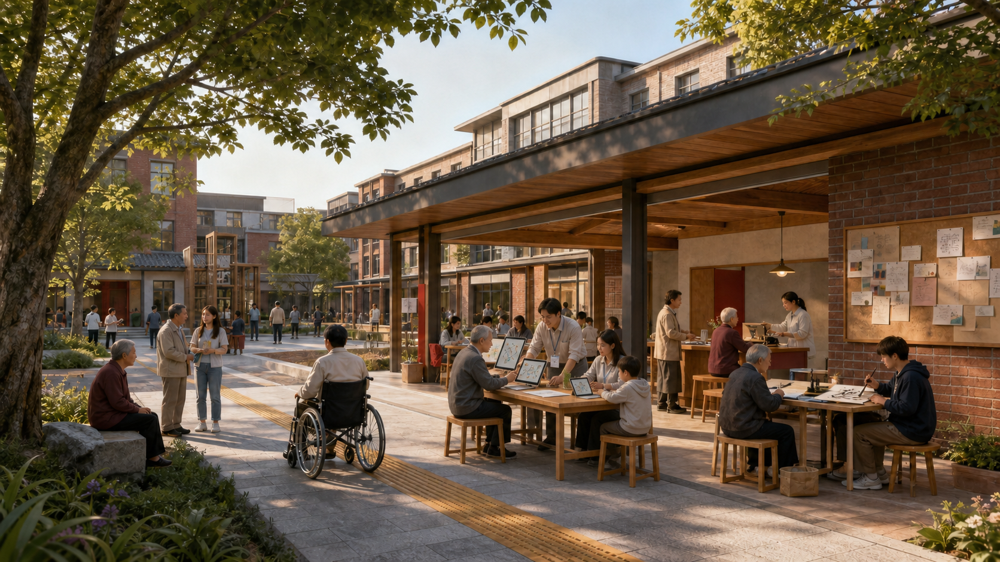
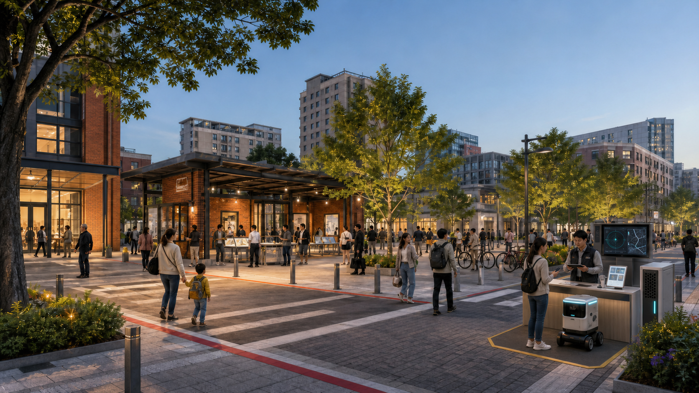

Open Weave / Jingzhang Civic Loop





Perspective renderings / 空间效果图
Four AI-generated and locally edited concept renderings communicate scale, material, everyday operating atmosphere and visible AI service carriers: a walking-guide node, model test sandbox, co-learning workstation and staffed AI terminal. They are not existing photographs, official renderings or final architectural designs.




Task coverage / six agent tasks · Self-check status
Three-level scope: research · overall design · three key areas
Renewal projects: eight reference packages, phased for professional review
Evidence and limitations · Assumptions
Sources are public or cleared. Provisional polygons are used only for design discussion and must be replaced and recalculated with official or cleared geometry. FAR, height, rights, redlines, utilities and heritage controls remain pending.
What must happen next
- Replace provisional site and key-area polygons with official or cleared geometry.
- Recalculate all geometry, figures, PDFs, HTML and manifest hashes.
- Complete professional, heritage, accessibility, safety and public-participation review.